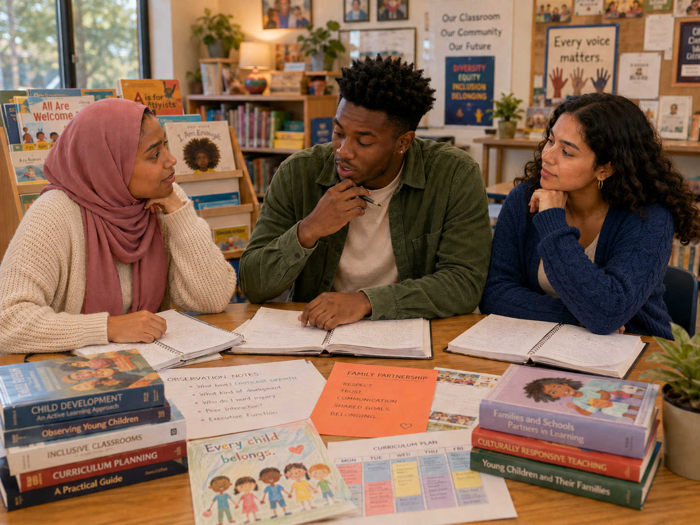

Equity in practice
⚖️ Equal or equitable?
Four children need different supports to join the same activity. What does equity require?
Making equity visible in everyday professional practice

Jordan: “At first, I thought this class would teach us what to do with children. Now I think it asks what kind of person I am becoming.”
Aaliyah: “Diversity and equity affect whose stories we read, whose languages we hear, who feels welcome, who gets supported, and who gets misunderstood.”
Maya: “We also have to examine our assumptions, biases, and comfort zones. Meaning well doesn’t mean we never miss things.”
Aaliyah: “Young children are learning whose voices count, whose families matter, whose bodies belong, and whether adults actually practice fairness.”
Jordan: “Maybe the final question is: Am I ready to keep learning so every child feels seen, valued, and included?”
Four children need different supports to join the same activity. What does equity require?
Choose the strongest connection.
Which classroom-library audit goes beyond counting diverse book covers?
A child says, “Boys can’t wear dresses.” What is the strongest response?
One group of children receives more behavior referrals. What should the teacher do next?
Which plan best reflects culturally responsive teaching?
A family challenges how the classroom portrays their community. What is the strongest response?
A teacher realizes a familiar practice advantages children whose home culture matches school norms. What is the best next step?
Which sequence best represents equitable professional practice?
Complete this sentence: I will know a classroom is becoming more equitable when…
Equity is visible in representation, access, relationships, expectations, decisions, support, and outcomes.
Did your response name evidence you could observe—not only kindness, intentions, or celebration?
Professionalism means continuing to notice, question, partner, act, evaluate, and learn.